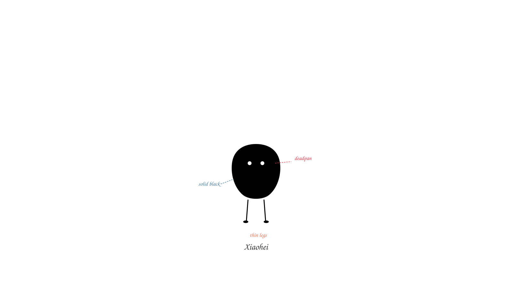
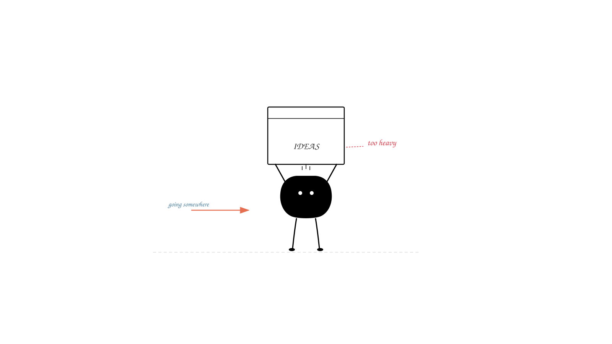
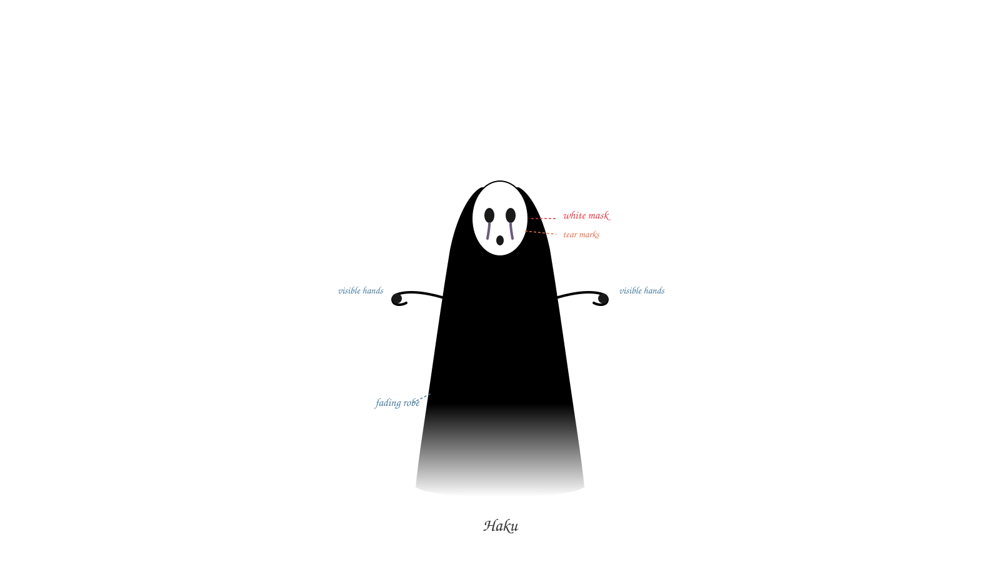
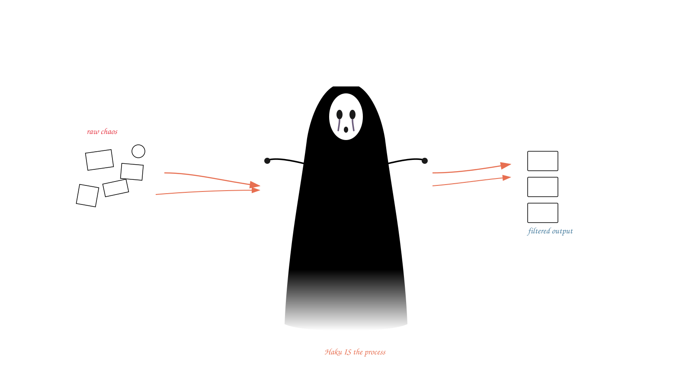

Visual test of both characters — basic forms, actions, and side-by-side comparison
Small solid-black blob. White dot eyes. Thin legs. Deadpan. Hands-on worker.
Standing idle — blob body, dot eyes, thin legs

Struggling under weight — physical labor metaphor

Tall floating spirit. Black fading robe. White mask. Tear marks. Visible hands. Silent conduit.
Floating still — mask, fading robe, hands extended

Embodying the process — chaos in, clean output out

Theme: "Information Filtering" — same concept, different character treatment
Physically carrying and sorting — doing the work
Being the filter itself — embodying the process